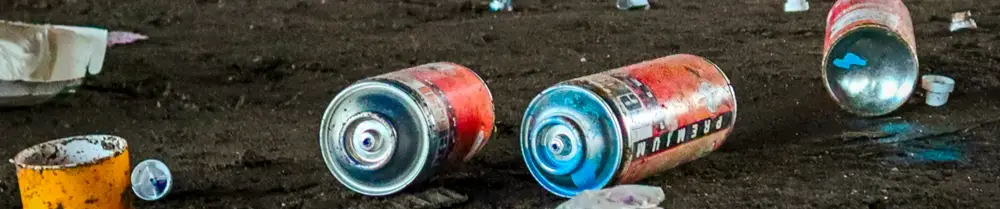

Tips Aman Mendaur-ulang Kaleng Bekas Aerosol Untuk Proyek DIY

Siapa saja yang kerap mengguakan pewangi ruangan atau bahkan anti-nyamuk berbasis aerosol? Nah, bila sudah berkali-kali memakai kedua hal tersebut, biasanya kita akan punya banyak sampah kaleng bekas aerosol. Ada saatnya kaleng-kaleng tersebut dibuang begitu saja, namun bisa jadi kita ingin menggunakannya untuk kebutuhan lainnya.
Para pecinta do it yourself (DIY) biasanya suka gatel pengen berkarya pakai kaleng bekas aerosol, ya? Kaleng bekas aerosol ini dapat digunakan untuk berbagai kebutuhan, mulai dari menjadikan kaleng bekas sebagai wadah untuk aneka komponen elektronik, hingga membuat kompor darurat berbahan bahan bakar alkohol yang cocok untuk dibawa camping.
Bahaya Mendaur-ulang Kaleng Aerosol
Namun, sebelum membuat DIY project menggunakan kaleng bekas aerosol, ada hal penting yang harus kita perhatikan. Seperti kita ketahui, aerosol ini flammable atau mudah terbakar bila terkena percikan api. Oleh karenanya, bila berencana untuk memotong kaleng aerosol menggunakan gerinda, kita harus lebih berhati-hati. Hal ini disebabkan oleh percikan api yang dapat dihasilkan dari gesekan mata gerinda dengan kaleng.
Lantas kenapa harus berhati-hati, bila pewanginya memang sudah habis terpakai? Kaleng aerosol bekas pewangi ruangan atau obat nyamuk, biasanya masih memiliki sisa-sisa gas aerosol didalamnya, meskipun pewanginya sudah habis. Hal ini dapat berbahaya bila kita langsung menggunakan gerinda dan memotong kaleng tersebut. Sisa-sisa gas aerosol dapat terbakar bila terkena percikan api dari gerinda dan bisa menyebabkan semburan api tiba-tiba atau bahkan kaleng jadi meledak.
Tips Aman Penggunaan Kaleng Bekas Aerosol
Oleh karenanya, sebelum memotong kaleng bekas aerosol menggunakan gerinda, kita perlu melubangi kaleng tersebut dan meniup atau memompa kaleng. Kita bisa membuat dua lubang menggunakan paku. Kita cukup menancapkan paku dan memukulnya secara perlahan menggunakan palu, hingga kaleng berlubang. Setelahnya, kita bisa meniup atau memompa di salah satu lubangnya, untuk mengalirkan gas aerosol keluar kaleng. Hal ini diperlukan untuk memastikan agar sisa-sisa gas aerosol di dalam kaleng bisa terbuang, sehingga kaleng pun aman saat terkena percikan api dari gerinda.
Cara lain yang bisa kita lakukan saat mengerjakan DIY project menggunakan kaleng bekas aerosol adalah dengan memotong kaleng menggunakan tang atau gunting yang besar. Hal ini disebabkan oleh kedua hal tersebut tidak mengeluarkan percikan api, sehingga dapat mengurangi kemungkinan gas aerosol untuk terbakar.
Video Tips Penggunaan Kaleng Bekas Aerosol
Semoga tips ini dapat bermanfaat untuk para pecinta DIY yang berencana untuk menggunakan kaleng bekas aerosol. Video tentang melubangi kaleng bekas ini sebelum menggerindanya, dapat dilihat dibawah ini. Semoga bermanfaat!